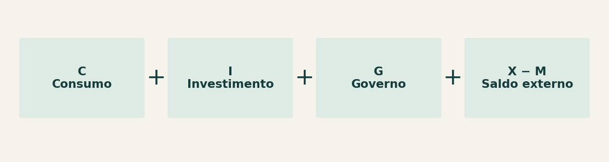
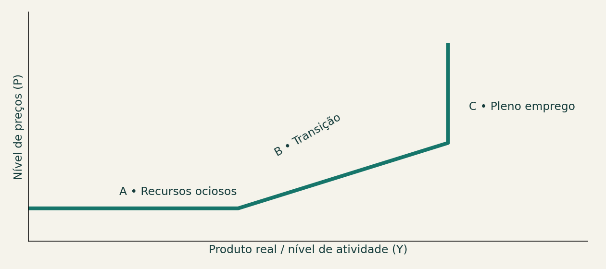
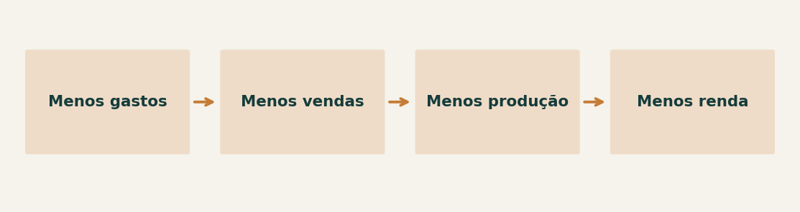
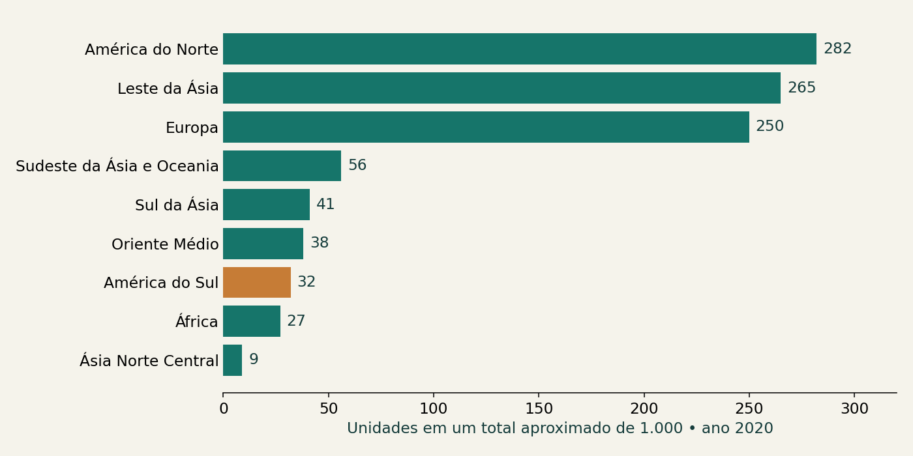

01 • Medição e planejamento
- Qual é a diferença entre uma análise ex post e uma análise ex ante?
- Por que medir o produto realizado não é suficiente para explicar como alcançar o pleno emprego?
Como as decisões de gasto se conectam à produção, ao emprego e aos preços no modelo keynesiano básico.
A contabilidade nacional mede a atividade realizada. O modelo keynesiano procura explicar por que a produção pode ficar abaixo do pleno emprego e como mudanças na demanda agregada alteram essa situação.
Questão central: quando o gasto aumenta, a economia produz mais ou apenas eleva os preços?
Contabilidade nacional e teoria macroeconômica respondem a perguntas diferentes.
Mede o produto e a renda efetivamente realizados. Registra o resultado da atividade econômica.
Analisa gastos desejados e planejados, o produto potencial e as alternativas para aproximar a economia do pleno emprego.
Base no material: Slides 3–4.
A demanda agregada reúne os gastos com bens e serviços finais produzidos na economia.

O consumo de uma família vira receita de uma empresa. Na escala da economia, decisões de gasto se conectam à produção e à renda.
Base no material: Slides 4–5; definições dos componentes como apoio didático.
O efeito depende do grau de utilização dos recursos produtivos.

| Situação | Resposta ao aumento da DA |
|---|---|
| A • Trecho keynesiano | Com desemprego e capacidade ociosa, a produção aumenta com preços constantes no modelo. |
| B • Trecho intermediário | Produção e preços podem aumentar conjuntamente. |
| C • Trecho clássico | No pleno emprego, o aumento da demanda eleva preços, com produto constante no esquema da aula. |
Por isso, o mesmo estímulo ao gasto tem consequências diferentes em uma economia com fábricas ociosas e em outra operando no limite.
Diagrama conceitual, sem escala numérica. A hipótese de preços constantes aplica-se ao trecho simplificado do modelo.Base no material: Slides 6–8.
No curto prazo, a demanda pode alterar a utilização de uma capacidade produtiva dada.
N representa o trabalho; K, o capital. A curva permanece dada, mas a produção pode variar ao longo dela. Curva fixa não significa produção constante.
Base no material: Slides 9–12.
A produção responde às perspectivas de venda: demanda insuficiente pode sustentar o desemprego.

Na abordagem keynesiana apresentada, uma queda simultânea dos gastos das famílias e empresas reduz as vendas. A produção e o emprego recuam, a renda cai e a redução inicial do gasto pode se reforçar.
A demanda determina o nível de produção no recorte de curto prazo com recursos ociosos.
Na formulação simplificada dos slides, a oferta gera sua própria demanda. Keynes questiona que isso garanta pleno emprego.
Resposta possível: elevar gastos públicos ou outros componentes da DA para utilizar recursos ociosos. Os slides destacam infraestrutura, serviços públicos e coordenação internacional.
Os slides relacionam Keynes à Grande Depressão, ao debate sobre a atuação do Estado e às respostas a crises posteriores. Também mencionam o Banco Mundial e o FMI, criados em 1944. As avaliações sobre políticas dessas instituições são apresentadas como discussão histórica do material, sem representar uma atualização de suas posições.
Base no material: Slide 13 e slides 27–31.
A parcela da renda disponível que não é consumida constitui poupança.
O título da aula inclui consumo e poupança, mas os slides não desenvolvem suas funções. Esta relação básica ajuda a ligar o título ao modelo.
Yd é a renda disponível para consumir ou poupar; C é o consumo; S é a poupança. Se uma família dispõe de R$ 3.000 e consome R$ 2.400, poupa R$ 600 naquele período.
Uma redução do consumo diminui um componente da DA, se os demais gastos permanecerem constantes. Com recursos ociosos, isso pode reduzir produção e renda.
Base no material: Complemento conceitual; conexão com slides 4, 13 e 27.
PIB total e PIB per capita permitem comparações diferentes.

Mede o valor da produção e informa o tamanho econômico de um país ou região.
Divide o PIB pela população. É uma média; não mostra como a renda se distribui entre as pessoas.
Os slides comparam países e regiões, mostrando que uma grande economia pode ter renda média por habitante relativamente baixa.
O material reúne recortes de 1970, 1995, 2020, 2021 e 2023. Compare indicadores apenas quando ano, moeda e método forem compatíveis. Os valores históricos não são um retrato da economia atual.
Gráfico reconstruído com a tabela do slide 25. Valores aproximados; mantida a regionalização do material.Base no material: Slides 14–25.
Com capacidade ociosa e preços constantes, a demanda agregada determina o nível de atividade no modelo básico. Ao aproximar-se do pleno emprego, o espaço para aumentar a produção diminui e a pressão sobre os preços cresce.
Explique com suas palavras e justifique as respostas. As questões indicadas como aplicação conectam os conceitos a situações concretas.